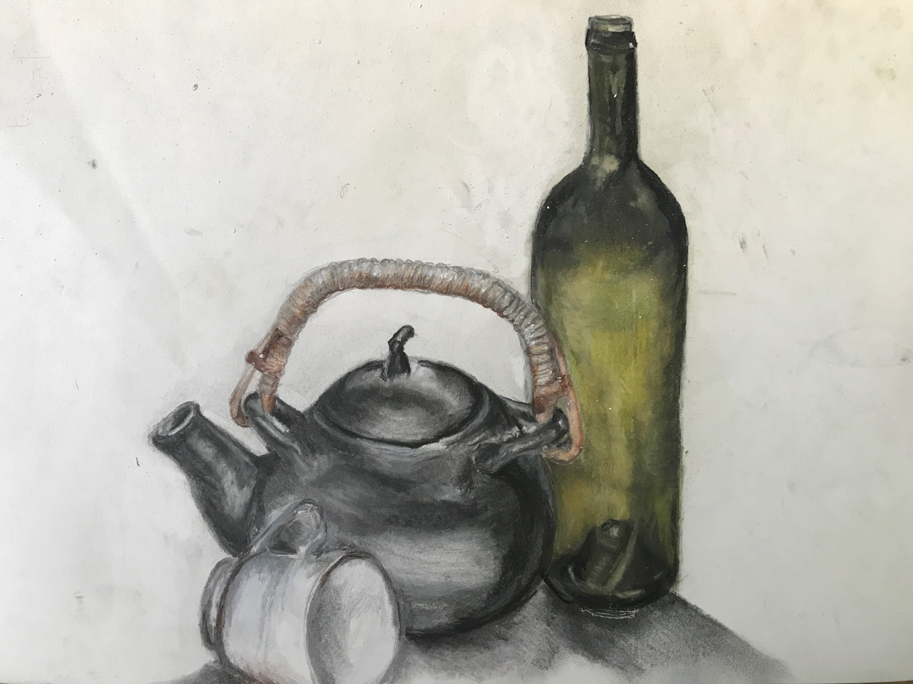
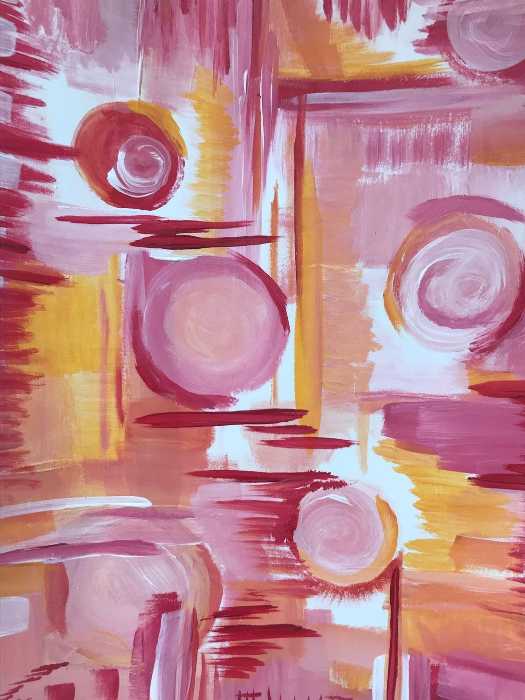

Where design, photography & text
intersect.
The Advertisement Collection: a collection of posters which aim to take ordinary objects to a more "sophisticated" level. I explore the question: would people be inclined to buy just about anything
as long as it is presented aesthetically?
"Chili&Co" (2021)
Mirroring Tiffany & Co., this piece was created entirely by hand and photographed with minimal editing on Adobe Photoshop.
"Ty and Flowers" (2021)
This piece was photographed on a makeshift "set" with minimal editing on Adobe Photoshop.
"Enchanted Flower" (2021)
This piece was also created on a makeshift "set" with minimal editing.
The glowing green light effect
was created using the flashlight of a phone hidden inside the purple "vase" photographed.
"Healthcare" (2021)
The perfume bottle and pearl necklace are edited to form that of an IV stand.
The three main elements: the perfume
, pearls, and pills on a dish are photographed.
This piece incorporates
editing on Adobe Photoshop and Adobe Illustrator.
"Baking" (2021)
Soil and flowers are used to depict cupcakes in this photograph.
This piece incorporates
minimal editing on Adobe Photoshop.
Yearbook Layouts: the following layouts for The American School of Dubai were created in Jostens Yearbook Avenue. The images
and graphics were created/edited on Adobe Illustrator and Adobe Photoshop.

Sports Opener Layout (2022)
The theme for the book this year centered around
returning from an era of COVID-19 & uniting through music.
This page emphasizes the anticipation for the return of athletics after being delayed for a year due to COVID.
The main photograph, layout, and text were taken/created/written by me.
Swimming Layout (2020)
The theme for this year: 20/20 vision, with
elements of outer-space/galaxy textures and prints. One of my favorite
layouts to ever create,
I strove to make this page as scrapbook-like as possible with cutouts and layering.
The layout and text were created/written by me - most images were taken by
Tina Richards and myself.

Stories of Triumph: Angelina (2022)
This series in the yearbook was created to highlight students
who wanted to share a story of personal growth after a
challenging period in their life. The selected students were interviewed and
photographed by me for their spread.
Angelina's story focused on using music as an outlet to express herself after being stranded
and confined during the pandemic.
The main photograph, layout, and text were taken/created/written by me.

Stories of Triumph: Tia (2022)
This series in the yearbook was created to highlight students
who wanted to share a story of personal growth after a
challenging period in their life. The selected students were interviewed and
photographed by me for their spread.
Tia's story captures what it means to take initiative of one's mental
health and finding a sense of comfort with the help
of her passion: volleyball.
The main photograph, layout, and text were taken/created/written by me.

Fall Opener Layout (2022)
These openers mirror Spotify
playlists, keeping true to the theme surrounding music and its unity. Listed above
are some of the biggest songs
of Fall 2022 for future nostalgia!
The layout and text were created/written by me - the main image on the page belongs
to Hannah Edgerton.

Summer Mock Layout (2021)
This layout was created
to demonstrate some techniques & tools available on Jostens Yearbook Avenue for the
new members of the team.
The photographs, layout, and text were taken/created/written by me.
Extra: miscellaneous pieces
created in Photoshop & on paper.
"Color" (2019)
This piece incorporates photography and editing on Adobe Photoshop.

"Incomplete Still Life" (2020)
The medias used in this piece include: color pencil (tea cup and pot handle),
charcoal (teapot), and chalk pastel (wine bottle) .
"Oyster" (2020)
An oyster captured on mixed media paper with watercolor paints.

"Pink Explosion" (2021)
A "freestyle" piece created with acrylic paints.

Colorizing an Image (2020)
With this piece, I took a black and white image of
my great-grandmother and used Adobe Photoshop
to colorize it with
"paint brushes" and other textures.